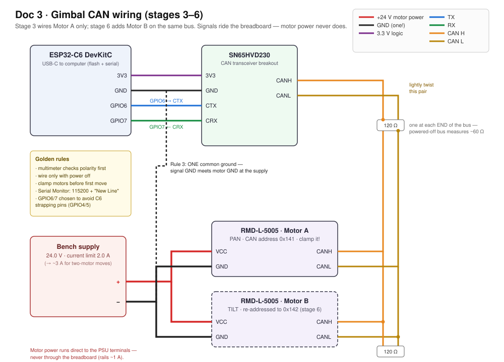

Doc 3 · Build the Gimbal — Bench Plan, Step by Step¶
Engineered Lighting prototype series · July 2026 For a first-time gimbal builder with limited electronics experience. Ten stages; each is one bench session with a "you're done when" checkpoint. Motors move on command by stage 4 — no mechanical work needed until stage 7.
Bill of Materials — buy this, ~$350–405 total¶
"Est." = total price for the quantity shown in that row.
| # | Part | Qty | Est. | Where | Notes / traps |
|---|---|---|---|---|---|
| 1 | MyActuator RMD-L-5005-100-C (CAN variant; the -R twin is RS485) | 2 (+1 spare recommended — see note) | $215 for 2 / $322.50 for 3 | Dings Motion USA, $107.50 ea | The smart pan/tilt actuators — motor, absolute encoder, and tuned controller in one 92 g, Ø49 mm puck; Doc 2 is the full story, and its availability addendum covers this exact part swap. Order the -C (CAN) variant explicitly. Ask the seller to include mating cables for the 4-pin port (VCC/GND/CANL/CANH) — one per motor plus a spare — and keep the protocol PDF that ships in the box: it's the authority on byte layouts for your unit's firmware. Why 3: this motor family sells out episodically; the third unit is the permanent bench-dev unit and feeds the future second fixture |
| 2 | ESP32-C6 dev board (ESP32-C6-DevKitC-1) | 1 | $9–15 | Amazon, Adafruit, DigiKey | Same chip as the fixture — everything learned transfers |
| 3 | SN65HVD230 CAN transceiver breakout (Waveshare "CAN Board") | 2 (1+spare) | $8 | Amazon | The ESP32 has the CAN brain on-chip but not the line driver — this little board is the voice, converting chip signals to the differential CAN wire pair. 3.3 V logic, breadboard-friendly. Bus termination gets measured and set in stage 3 |
| 4 | 120 Ω resistors, ¼ W | few | $1 | any resistor kit | CAN bus termination |
| 5 | Bench power supply, ≥3 A continuous, adjustable current limit | 1 | $45–60 | Amazon (any 30 V/5 A unit) | Powers the motors and, later, the whole bench. The adjustable current limit is smoke insurance for a first build, and the 3 A rating covers the motors' real appetite (~1–1.5 A running, 5–8 A instantaneous peaks) |
| 6 | Multimeter | 1 | $20 | Amazon | Non-negotiable — polarity check before every first power-up |
| 7 | Breadboard + jumper wires | 1 kit | $10 | Amazon | Signals only — power never routes through it |
| 8 | USB-C data cable | 1 | — | you own one | Charge-only cables are a classic trap |
| 9 | M2.5 + M3 screw assortment | 1 box | $10 | Amazon | Confirm sizes against the motor drawing (myactuator.com downloads) |
| 10 | USB-to-CAN adapter ("CANable" or clone) — optional but recommended | 1 | $20–25 | Amazon | Lets your laptop eavesdrop on the bus; turns "nothing happens" into readable evidence |
| 11 | PETG filament + access to any FDM 3D printer & slicer; 6804 or 608 bearings | — | $20 | Amazon / local makerspace | For stage 7's three frame parts. No printer at home? A library, makerspace, or online print service works — the parts are small |
| 12 | C-clamp or small bench vise | 1 | $10 | hardware store | Stage 4 clamps the bare motor before its first move; stages 7–8 clamp the assembled rig |
| 13 | Payload stand-in: small flashlight or ~100 g weight | 1 | — | — | Real LED head comes from Doc 4 |
| 14 | Digital calipers | 1 | $10–20 | Amazon | The frame chapter (Doc 3b) runs on measurements — every MEASURE-ME parameter in the scaffold comes from these |
Family sold out again? CubeMars GL40 II ($134, DigiKey, direct-drive, CAN) is the buy-today alternative at the cost of a protocol port; M5Stack RollerCAN ($44) is the dev bridge while waiting.
Concepts in six terms¶
- CAN bus: a two-wire intercom line. Every device has an address (ours: pan = 0x141, tilt = 0x142 — hex numbers are just house numbers). Messages are always 8 data bytes — short frames get silently ignored (a documented real-user bug).
- Transceiver & termination: the ESP32 has the CAN brain on-chip but not the voice — the SN65HVD230 chip is the voice. The wire pair needs a 120 Ω resistor at each end (termination) so signals don't echo.
- Current limit: a bench supply setting that caps output current. Set low, a wiring mistake fizzles instead of smoking. Our bring-up setting: 2.0 A (enough for one motor to run; still safe).
- Common ground: two power sources (USB-powered ESP32, 12 V motor supply) must share one ground wire, or signals have no reference and nothing works. The #1 "why is it dead" cause.
- Absolute encoder: the motor knows its angle the instant power arrives — within one revolution (it can't count full turns made while off, so the frame gets hard stops).
- 0xA4: the workhorse command of this build — "go to angle X, no faster than Y°/s," packed in 8 bytes. The motor does all trajectory math onboard. (A few housekeeping commands appear too: 0x92 read-angle, 0x79 set-address, 0x63/0x64 set-zero.)
Stage 1 — Bench setup and the three rules¶
Set the supply to 12.0 V, current limit 2.0 A before connecting anything (12 V is gentler for bring-up; motors accept 12–24 V; raise toward 3 A in stage 6 for two-motor moves).
The rules that prevent 90% of beginner damage: (1) multimeter checks polarity before every first power-up; (2) wire only with power off; (3) one common ground between ESP32 and motor supply.
Done when: supply reads 12.0 V / 2.0 A limit and you can explain rule 3.
Stage 2 — Hello, ESP32 (and exactly how code gets onto the board)¶
🤖 Give this to your agent
You're my bench agent for the Engineered Lighting gimbal build
(chapter: engineering.engineered.lighting/03-build-the-gimbal/, stage 2).
An ESP32-C6-DevKitC-1 is plugged into this computer by USB-C. Start by
proposing a plan and wait for my approval before executing anything.
Then: install arduino-cli if missing, install the esp32 core (>=3.x),
detect the board's port, compile and upload the stock Blink example
(FQBN esp32:esp32:esp32c6), then open a serial monitor at 115200 and
show me 10 seconds of output. Done when: the LED blinks and you've shown
me serial output. If upload fails at "Connecting…", tell me to hold the
BOOT button and retry rather than guessing. Report back: the exact
commands you ran and the captured output.
Every sketch in this doc reaches the board the same way — learn it once here:
Do it by hand — understand what the agent did
- Download Arduino IDE 2.x from arduino.cc and install.
- Open Boards Manager (second icon in the left sidebar) → search "esp32" → install "esp32 by Espressif Systems," version 3.x or newer (this teaches the IDE about the C6). Takes a few minutes.
- Plug the dev board in with a USB-C data cable.
- Tools → Board → esp32 → "ESP32C6 Dev Module", then Tools → Port → the entry that appeared when you plugged in (Windows:
COM5-style; Mac:/dev/cu.usbmodem…). Not sure which? Unplug, note the list, replug — the new one is yours. - Open File → Examples → 01.Basics → Blink. Click the ✓ (Verify) button to compile, then the → (Upload) arrow. The black console below should march through
Writing at 0x… (100%)and end withHard resetting…. - To see what the board says: open Serial Monitor (magnifying-glass icon, top right), set the dropdown to 115200 baud, and set the line-ending dropdown beside it to "New Line" (the sketches read commands terminated by a newline — with the wrong setting, typed commands sit there doing nothing). This window is your conversation with the microcontroller — every stage-4+ command gets typed here, every reply appears here.
- From now on: File → New Sketch → paste the code from this doc → Upload → open Serial Monitor. That's the whole workflow.
Done when: LED blinks and text appears in Serial Monitor.
If stuck: port never appears = charge-only cable (swap it). Upload dies at Connecting… = hold the board's BOOT button until writing starts. Gibberish in the monitor = baud isn't 115200.
Stage 3 — Wire the CAN line¶
Hands-on stage — no agent lane; the level-3 wiring photo check applies.

Color diagram (covers stages 3–6; stage 3 wires Motor A only — Motor B is the dashed box). Plain-text version below for quick bench reference:
Plain-text wiring (quick bench reference)
ESP32-C6 SN65HVD230 board RMD-L-5005 motor
-------- ---------------- ----------------
3V3 ────────────────── 3V3
GND ────────────────── GND ───────┬─────────── GND (power minus)
GPIO6 (TX) ──────────── CTX │
GPIO7 (RX) ──────────── CRX │
CANH ─────┼─────────── CAN H ← lightly twist
CANL ─────┼─────────── CAN L ← these two
│
Bench supply +12V ──────────────────┼─────────── VCC (power plus)
Bench supply GND ───────────────────┘
Annotations:
- Why GPIO6/7: many online examples use GPIO4/5, which are strapping pins on the C6 (read by the chip at boot). They usually work; avoiding them removes a category of weird boot behavior for free.
- Termination check: with everything unpowered, measure resistance CANH↔CANL. ~120 Ω = one resistor present somewhere; ~60 Ω = two (correct); open = none. Add external 120 Ω resistors until the bus reads ~60 Ω.
- Motor power never touches the breadboard (rails are ~1 A). Motor + and − go directly to the supply terminals; only thin signal wires (CAN pair, signal ground) touch the breadboard.
Done when: wired, powered, nothing warm.
Stage 4 — First contact: read, then move¶
🤖 Give this to your agent
You're my bench agent for the Engineered Lighting gimbal build
(chapter: engineering.engineered.lighting/03-build-the-gimbal/, stage 4).
The stage-3 wiring is live on the bench: ESP32-C6 and SN65HVD230 on the
breadboard, one RMD-L-5005 motor clamped to the bench, supply at 12.0 V
with the 2.0 A current limit set. Start by proposing a plan and wait for
my approval before executing anything. Then: compile and upload the
stage-4 sketch in the chapter (FQBN esp32:esp32:esp32c6, TX=GPIO6,
RX=GPIO7, CAN at 1 Mbit/s), open serial at 115200 with newline line
endings, and send r to read the angle (command 0x92) BEFORE any motion —
any reply at all is the win. Only after I confirm the read: one small
watched move, a10 (command 0xA4 at 30 deg/s). Traps: CAN frames are
always 8 data bytes — short frames are silently ignored; the first
absolute move can sweep up to a half-turn because factory zero is
arbitrary; if upload dies at "Connecting…", tell me to hold the BOOT
button and retry rather than guessing; if there is no CAN reply, print
the twai_get_status_info error counters after a send — climbing counters
mean wiring, not code.
SAFETY — non-negotiable: never command motor motion unless I confirm
I'm watching with a hand near the supply switch. The bench current limit
stays as set. Announce each motion command before sending it and wait
for my explicit go.
Done when: commanded angles work and the power-cycle trick passes.
Report back: the exact commands you ran and the captured serial output,
including the raw 0x92 reply frames.
Clamp the motor to the bench first — a commanded motor twists its own body as hard as its shaft; unclamped motors jump.
Upload:
#include "driver/twai.h"
void setup() {
Serial.begin(115200);
twai_general_config_t g = TWAI_GENERAL_CONFIG_DEFAULT(
(gpio_num_t)6, (gpio_num_t)7, TWAI_MODE_NORMAL); // TX=GPIO6, RX=GPIO7
twai_timing_config_t t = TWAI_TIMING_CONFIG_1MBITS(); // RMD motors talk at 1 Mbit/s
twai_filter_config_t f = TWAI_FILTER_CONFIG_ACCEPT_ALL();
twai_driver_install(&g, &t, &f);
twai_start();
Serial.println("CAN up. r = read angle, a<deg> = move (a45), z = go to 0");
}
void send8(uint32_t id, uint8_t d0,uint8_t d1,uint8_t d2,uint8_t d3,
uint8_t d4,uint8_t d5,uint8_t d6,uint8_t d7) {
twai_message_t m = {}; m.identifier = id; m.data_length_code = 8; // ALWAYS 8 bytes
uint8_t d[8] = {d0,d1,d2,d3,d4,d5,d6,d7}; memcpy(m.data, d, 8);
twai_transmit(&m, pdMS_TO_TICKS(100));
}
// 0xA4 = "go to <deg> absolute, max <dps> deg/sec". deg → hundredths, little-endian.
void moveTo(float deg, uint16_t dps) {
int32_t p = (int32_t)(deg * 100.0f);
send8(0x141, 0xA4, 0x00, dps & 0xFF, dps >> 8,
p & 0xFF, (p >> 8) & 0xFF, (p >> 16) & 0xFF, (p >> 24) & 0xFF);
}
void loop() {
if (Serial.available()) {
String c = Serial.readStringUntil('\n'); c.trim();
if (c == "r") send8(0x141, 0x92,0,0,0,0,0,0,0); // read angle
else if (c == "z") moveTo(0, 30);
else if (c.startsWith("a")) moveTo(c.substring(1).toFloat(), 30);
}
twai_message_t rx;
if (twai_receive(&rx, 0) == ESP_OK) {
Serial.printf("reply id=0x%03X data=", (unsigned)rx.identifier);
for (int i = 0; i < 8; i++) Serial.printf("%02X ", rx.data[i]);
Serial.println();
}
}
The session: type r — any reply is the win (proves wiring, transceiver, bitrate, motor). Then a10 — the motor turns to absolute 10° and holds (it resists a gentle hand). Heads-up on the very first move: the factory zero is wherever assembly left it, so the first absolute command may sweep up to a half-turn — calm at the 30°/s limit, but that's why the motor is clamped. Play with a45, a-30, z.
The no-homing party trick: move to a45, kill motor power, nudge the shaft (less than a full turn), power on, type r — it still knows its angle. That's the product's silent-wake feature. Fine print: single-turn encoder, so the frame gets hard stops making a full off-power revolution impossible.
Done when: commanded angles work and the power-cycle trick passes.
If stuck (no reply): first check the software non-bug — Serial Monitor line-ending set to "New Line" (stage 2, step 6)? Then hardware, in order: CANH/CANL swapped → missing common ground → motor unpowered → termination. The driver fails silently on a broken bus; print twai_get_status_info error counters after a send (climbing counters = wiring, not code). This is where the $20 USB-CAN dongle earns its keep.
Stage 5 — Characterize (the measurements everything depends on)¶
🤖 Give this to your agent
You're my bench agent for the Engineered Lighting gimbal build
(chapter: engineering.engineered.lighting/03-build-the-gimbal/, stage 5).
The stage-4 rig is live: one clamped motor answering 0x92/0xA4 over CAN,
and I'm standing by with a phone dB app and the supply ammeter — I call
out every meter reading, you log it. Start by proposing a plan and wait
for my approval before executing anything. Then drive the stage's
measurement sweeps using the stage-4 sketch in the chapter: noise at
hold and during moves at 10 / 30 / 60 / 90 deg/s (phone at 30 cm, same
app throughout so stage-10 numbers compare); hold current unloaded and
then with ~100 g hung 4 cm off-axis; warmth after 30 minutes holding;
and the resolution steps a10.00, a10.50, a10.05 with a flashlight taped
on while I watch the wall. Pause after each condition, prompt me for the
reading, and build the noise/current table as we go. The fast rows
matter most: follow-me needs 54–80 deg/s on close passes, so they decide
whether tracking stays silent or gets speed-capped.
SAFETY — non-negotiable: never command motor motion unless I confirm
I'm watching with a hand near the supply switch. The bench current limit
stays as set. Announce each motion command before sending it and wait
for my explicit go.
Done when: the numbers are written down.
Report back: the completed noise/current table and the serial log of
every command you sent.
- Noise (phone dB app — pick one and stick with it so stage-10 numbers compare, e.g. NIOSH SLM on iOS or Sound Meter on Android; 30 cm distance): at hold, and during moves at 10 / 30 / 60 / 90 °/s. Quiet room ≈ 30–40 dB. Two verdicts ride on this: whine at hold (the sealed loop can't be retuned — this is the RMD bet's one risk), and the speed where motion becomes audible — follow-me needs 54–80°/s on close passes (Doc 5), so the fast rows decide whether tracking stays silent or gets speed-capped.
- Hold current (supply ammeter): unloaded, then with ~100 g hung 4 cm off-axis — previews why the balanced head matters.
- Warmth after 30 min holding: warm fine; too-hot-to-touch is thermal-budget data.
- Resolution feel: step
a10.00 → a10.50 → a10.05with a flashlight taped on; watch the wall (0.05° ≈ 2 mm at 2.4 m).
Done when: the numbers are written down.
Stage 6 — Second motor, one bus¶
🤖 Give this to your agent
You're my bench agent for the Engineered Lighting gimbal build
(chapter: engineering.engineered.lighting/03-build-the-gimbal/, stage 6).
Motor B is on the bench at the factory address, connected ALONE on the
CAN pair; motor A is disconnected for the re-address step. Start by
proposing a plan and wait for my approval before executing anything.
Then: change motor B's ID to 2 with command 0x79 per the manual's "CAN
ID setting" section — send that write exactly once, never in a loop
(it's a persistent flash write, so wear is real, and it only takes
effect after a reboot), have me power-cycle the motor, and verify it
now answers at 0x142. Next I'll daisy-chain both motors on one
CANH/CANL pair and raise the supply current limit toward 3 A; then
extend the stage-4 sketch in the chapter with a b<deg> command for
motor 0x142 and a combined p<deg> t<deg> command that sends the two
0xA4 frames back-to-back (~0.1 ms apart — simultaneous for a
spotlight).
SAFETY — non-negotiable: never command motor motion unless I confirm
I'm watching with a hand near the supply switch. The bench current limit
stays as set. Announce each motion command before sending it and wait
for my explicit go.
Done when: combined pan+tilt commands move both motors; each still
answers alone.
Report back: the sketch diff and serial captures showing replies from
both 0x141 and 0x142.
Motors ship with the same address, so: connect motor B alone, change its ID to 2 (command 0x79 per the manual's "CAN ID setting" section, or MyActuator's PC tool), power-cycle, verify it answers at 0x142. Then daisy-chain both on one CANH/CANL pair, raise the current limit toward 3 A, extend the sketch with b<deg> and a combined command (two frames back-to-back ≈ 0.1 ms apart — simultaneous for a spotlight).
From here on, some stages describe what to add rather than printing every line — deliberately: this is where the AI-as-lab-partner workflow (below) takes over. "Extend the stage-4 sketch with a
b<deg>command for motor 0x142 and a combinedp<deg> t<deg>command" is a one-prompt job.
Done when: combined pan+tilt commands move both motors; each still answers alone.
Stage 7 — Print the frame, balance the head¶
Hands-on stage — no agent lane; the level-3 wiring photo check applies.
Three printed parts — pan base, yoke, head shell — turn two motors into an aimed head. The full frame chapter, with the parametric OpenSCAD scaffold, the five-minute fit coupon, and X1C print settings, is Doc 3b · Print the Frame. Print there, then come back here to wire and balance.
Wire routing: motor pigtails (power + CAN) cross each joint as a loose service loop — droopy, never taut across full travel.
Balancing (the important 20 minutes): power OFF, the head should stay wherever you pose it. If it flops, slide the counterweight. Balanced head = near-zero hold current = silent and cool. Verify: hold current at 0°/45°/90° tilt barely differs from the unloaded stage-5 reading.
Done when: the powered-off head stays posed anywhere; powered moves are smooth, no cable snags.
Stage 8 — Aim at the room¶
🤖 Give this to your agent
You're my bench agent for the Engineered Lighting gimbal build
(chapter: engineering.engineered.lighting/03-build-the-gimbal/, stage 8).
The balanced rig from stage 7 is clamped at a measured height h above
the desk, with a desk-corner origin and taped target marks measured in
meters. Start by proposing a plan and wait for my approval before
executing anything. Then: extend the stage-6 sketch in the chapter with
a goto x y serial command implementing the stage's math — pan =
atan2(y_t - y_f, x_t - x_f), tilt = atan(horizontal_distance / h) —
using the h and fixture position (x_f, y_f) I give you. Upload, then
walk the beam between the taped marks one goto at a time, logging
commanded target vs. where the beam actually lands so we can see the
systematic error (mount lean, zero offsets) — in the product that
becomes a one-time install calibration.
SAFETY — non-negotiable: never command motor motion unless I confirm
I'm watching with a hand near the supply switch. The bench current limit
stays as set. Announce each motion command before sending it and wait
for my explicit go.
Done when: goto 0.5 0.3 lands within a few cm, repeatably.
Report back: the sketch diff, the goto commands you sent, and the
logged table of commanded vs. actual landings with the systematic
offset noted.
Clamp the rig at height h above the desk. Pick an origin (a desk corner), measure in meters. For a target at (x_t, y_t) with the fixture at (x_f, y_f): pan = atan2(y_t − y_f, x_t − x_f), tilt = atan(horizontal_distance / h). Add a goto x y serial command implementing that; walk the beam between taped marks; note the systematic error (mount lean, zero offsets) — in the product this becomes a one-time install calibration.
Done when: goto 0.5 0.3 lands within a few cm, repeatably.
Stage 9 — Hand the keys to the network¶
🤖 Give this to your agent
You're my bench agent for the Engineered Lighting gimbal build
(chapter: engineering.engineered.lighting/03-build-the-gimbal/, stage 9).
The aimed rig from stage 8 is on the bench, and a Home Assistant
machine running the Mosquitto broker add-on is on the LAN — I'll give
you its IP and the WiFi details. Start by proposing a plan and wait for
my approval before executing anything. Then: add WiFi + MQTT to the
stage-8 sketch in the chapter using the PubSubClient and ArduinoJson
libraries. Subscribe to spotlight/target and parse the Doc 6 envelope
{"v":1,"ts":1784150000000,"pan":32.5,"tilt":-14,"rate":10} — v and ts
are the contract's mandatory envelope fields — into the two CAN frames,
and publish read-back angles every few seconds. Then test end to end:
publish a target from this laptop (mosquitto_pub or MQTT Explorer),
watch the read-back topic confirm the move, and do the final check with
the USB cable unplugged.
SAFETY — non-negotiable: never command motor motion unless I confirm
I'm watching with a hand near the supply switch. The bench current limit
stays as set. Announce each motion command before sending it and wait
for my explicit go.
Done when: an MQTT publish from your laptop aims the beam, no USB
attached.
Report back: the sketch diff and a mosquitto_sub -t 'spotlight/#' -v
capture showing the published target and the read-back angles that
followed.
Add WiFi + MQTT: install the PubSubClient and ArduinoJson libraries (Sketch → Include Library → Manage Libraries, search by name). The broker is the Mosquitto add-on in Home Assistant (Doc 4's prerequisites box) — point the sketch at your HA machine's IP. Behavior: subscribe to spotlight/target, parse {"v":1,"ts":1784150000000,"pan":32.5,"tilt":-14,"rate":10} (v/ts are the contract's mandatory envelope fields — Doc 6) → two CAN frames; publish read-back angles every few seconds. Note: this MQTT lane is the bench interface — production replaces it with a direct native-API action (Doc 6 §1). (Another one-prompt AI-partner job: "add WiFi+MQTT to this sketch per this paragraph.") Test from MQTT Explorer or a Home Assistant automation.
Done when: an MQTT publish from your laptop aims the beam, no USB attached.
Stage 10 — Verdict checklist¶
- Hold noise, balanced head, several angles — indistinguishable from the room (<~35 dB)
- Sweep noise at 10–90°/s (the speed-vs-silence decision)
- Repeatability: same
gotomark 20×, scatter ≤ 1 cm at 1 m (≈0.5°) - Power-loss recovery: correct angle knowledge, zero homing motion
- 4-hour hold: current, temperature, no intermittent whine
- 50 full-travel sweeps: service loops intact
- Total power draw at 24 V — record it for the fixture power budget (external design doc: the fixture brief's ~60 W mode-based table)
Pass → the architecture graduates to the fixture's lower-module PCB (C6 TWAI + $2 transceiver, actuators as-is). Whine or heat at hold → try the other supply voltage (24 V vs 12 V), re-balance harder, then fall back to the DIY FOC path (Doc 2, "The DIY path and its documented pain") where you own the loop.
AI as your lab partner¶
The Serial Monitor output, compiler errors, and CAN frames in this build are all text — which makes every debugging step here something an AI can read, reason about, and often fix. Four levels, in order of setup effort:
Level 0 — paste the evidence (zero setup). When something misbehaves, paste into Claude: the entire sketch, the entire Serial Monitor output (not excerpts — the boring lines are often the clue), and one sentence on what you expected. Compiler errors especially: ESP32 toolchain errors are verbose and AI-friendly. This alone resolves most beginner walls.
Level 1 — let the agent drive the board (Claude Code + arduino-cli). Arduino has a command-line twin, arduino-cli, which means a coding agent with shell access can run the whole loop itself:
arduino-cli compile --fqbn esp32:esp32:esp32c6 gimbal_sketch/ --upload -p /dev/cu.usbmodem101
arduino-cli monitor -p /dev/cu.usbmodem101 -c baudrate=115200
Run Claude Code in the folder holding your sketch (keep it in git so edits are reviewable) and ask things like: "Upload this, send r over serial, capture 30 seconds of output, and tell me why the reply frames don't decode as angles." (For scripted send-and-capture the agent will typically write itself a five-line pyserial helper rather than use the interactive monitor — let it.) The agent edits, recompiles, re-uploads, and re-reads output in a loop — the same iteration you'd do by hand, minus the hand. Give it these docs as context so it knows the pins, addresses, and protocol.
Level 2 — let the agent see the bus and the telemetry. The optional USB-CAN dongle (BoM #10) turns raw bus traffic into text an agent can decode. On a Mac bench (yours), that's a small python-can script with the dongle in slcan mode streaming every frame as text; on a Linux box it's one command (candump can0). Either way, Claude can diff what's on the wire against the RMD protocol PDF — far better than a human squinting at hex. Once stage 9 adds MQTT, mosquitto_sub -t 'spotlight/#' -v gives an agent live telemetry to watch while it commands test moves and checks the reported angles match.
Level 3 — let it see the bench. Photograph the breadboard and ask Claude to check the wiring against this doc's stage-3 diagram before first power-up. Cheap, catches swapped CANH/CANL and missing grounds surprisingly well.
One hard rule: the agent never commands motion unattended. Current limit stays set, your hand stays near the supply switch, and any agent-driven test that moves the motor happens while you watch. Agents are excellent at reading; keep the physical-safety authority human.
Reference card¶
| Thing | Value |
|---|---|
| CAN bitrate / frame size | 1 Mbit/s · always 8 data bytes |
| Motor addresses | pan 0x141 · tilt 0x142 (set via cmd 0x79) |
| Move command | 0xA4: [A4 00 spdLo spdHi pos0..pos3], pos = deg×100, int32 little-endian |
| Read angle / set zero | 0x92 · 0x63/0x64 (zero write needs reboot; do once, never in a loop — flash wear) |
| Pins | TX=GPIO6→CTX, RX=GPIO7←CRX (GPIO4/5 avoided: strapping pins) |
| Supply | 12 V bring-up @ 2.0 A limit (→~3 A two-motor); 24 V test in stage 10; motor power direct to PSU, never via breadboard |
| Golden rules | multimeter first · wire cold · one ground · twist CANH/CANL · balanced head = silent head |
Risk register¶
- Hold whine. A balanced head should hold silently; audible whine at hold means current is fighting gravity — rebalance (stage 7's counterweight slot) before blaming the motor. Stage 5's hold-noise row is the baseline; stage 10 re-checks it at several angles.
- Protocol drift. Byte layouts vary across RMD firmware revisions — the protocol PDF that ships in the box is the authority for your unit, over anything online (including this doc's frame examples). When replies don't decode, diff against the PDF first.
- Single-turn absolute encoder. The motor knows its angle within one revolution but can't count full turns made while powered off — the frame's hard stops (stage 7) are what make power-loss recovery unambiguous. Don't delete them to save print time.
- Supply volatility. This motor family sells out episodically at retail (the 4005 did exactly that in July 2026 — see Doc 2's addendum). The third-unit spare in the BoM is the insurance; the alternates line under the BoM is the fallback path.
- Speed vs. silence. The 54–80 °/s band that follow-me needs (stage 5) may not be silent on your unit. If it isn't, the perception layer speed-caps close passes — losing some tracking snappiness — rather than accepting audible sweeps. Decide with stage-10 data, not hope.
Further reading¶
- MyActuator RMD-L-5005 downloads — the STEP files (stage 7 frame design) and the protocol PDF that is the authority on your unit's byte layouts.
- isaac879's Pan-Tilt-Mount — printable pan/tilt geometry worth studying before designing the yoke.
- Visaging ESP32-Gimbal — an ESP32-class gimbal build; different goals (stabilization), same mechanical vocabulary.